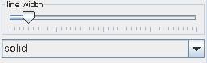

LINE SLICE
The line slice module extracts a 1D regular field of input data along a line from a regular 2D or 3D field. The line is parallel to one of the axes.
Input data
The input must contain a regular 2D or 3D field.
Output data
The output is a regular field and a geometry object of the field.
Computation parameters
Direction radio button menu allows to choose the direction of the line. In case of 2D input field the user chooses between x- and y-direction, in case of 3D input field the choice is between x-, y- and z-direction.
Sliders below the direction radio buttons pick up the placement of the line in the remaining dimensions. Text fields below the sliders allow to type in the maximum, minimum and current values.
If dynamic sliders check box is on, the line location is updated immediately with the slider movement. By default this option is off.
If recompute min/max is on, minimum and maximum on the chosen line is recomputed. By default this option is off.
Presentation parameters
Presentation tab contents are described in the common interfaces section unter the Presentation Panel entry.
There are two parameters which are especially important for lines.

The line width slider allows to adjust the width of the lines. A drop down menu allows to choose between different line styles solid, dashed, dotted, dashdot. The default line style is solid.
Example
Choose test regular field 3D module from test objects library, line slice module from general mappers and accessories library and streamlines from 3D field mappers library and connect them. In the computation tab of the line slice module switch x axis on and choose for y the value 25 and for z the value 40. In its presentation tab choose color component null.